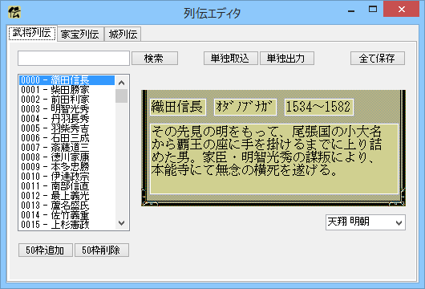
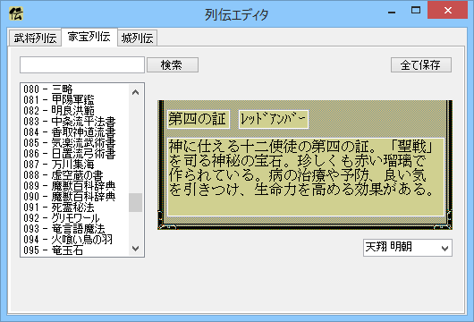
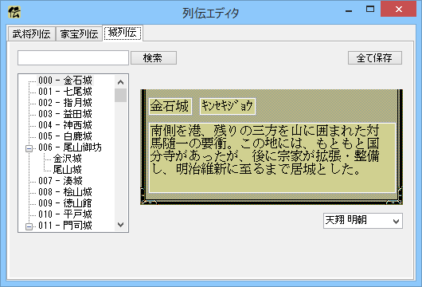

列伝を編集するためのツールとなります。
以下の３つの項目を編集することが出来ます。
正式名称「戦国武将列伝」のことです
正式名称「戦国名物事典」のことです
正式名称「戦国名城物語」のことです
上記、.zipファイルを解凍し、RetsudenEditor.exe を 「天翔記フォルダ」に入れる。
RetsudenEditor.exe を実行。
使い方の説明を要するするほどのUI要素はありません。
従来の列伝エディタとは異なり、WYSIWYGに近くなっています。


